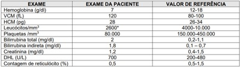

Questão 1 · Diagnóstico da anemia megaloblástica · 4000184838Mulher, 60 anos, apresenta cansaço progressivo há 4 meses. Exames laboratoriais iniciais: Ht = 22%; Hb = 7g/dL; volume corpuscular médio (VCM) = 115fL; leucócitos = 2.500/mm³; plaquetas = 65.000/mm³; reticulócitos normais; bilirrubina = 1,5mg/dL com predomínio de indireta; e LDH elevada. Pode-se a rmar que provavelmente o esfregaço periférico revelará:
A dacriócitos
B esferócitos
C drepanócitos
D macroovalócitos
Questão 2 · Quadro clínico da anemia megaloblástica · Def iciência de vitamina B12 · 4000184683Paciente de 53 anos, gênero masculino, comerciante, vem em consulta na unidade básica de saúde com quadro de alteração de comportamento há 5 meses e piora nas últimas 3 semanas. Família relatava que o paciente começou a apresentar alterações leves como errar o valor dos produtos que trabalhava, esquecer fatos cotidianos e ultimamente estava trocando os nomes dos produtos e acusando os consumidores de estarem roubando as mercadorias da loja. Negavam histórico de tabagismo, etilismo, uso de drogas ilícitas e/ou outras medicações. Apresentava marcha atáxica e trazia alguns exames laboratoriais: Hb: 10,0g/dL (VCM: 110fL/HCM: 30pg);/Ht: 32%/ Leucócitos: 2.000/ Plaquetas: 100.000; Creatinina: 0,8mg/dL; TSH: 1,9 mcUl/mL; Ca: 9,5mg/dL; Albumina: 5,0g/L; Glicose: 88mg/dL. Além da realização de exame de neuroimagem, qual a melhor conduta neste momento? (Valores de referência: Hb > 13g/dL; Ht: 35 a 45%; VCM: 80 a 100fL; HCM: 28 a 32pg; Albumina: 3,5 a 5,4g/L; TSH: 0,5 a 5,0mcUl/mL; Lo: 4.500 a 10.000; Plaquetas: 150.000 a 450.000; Creatinina: 0,8 a 1,2mg/dL; Glicose: 70 a 105mg/dL; Ca: 8,8 a 10,2mg/dL).
A Iniciar Ácido fólico
B Iniciar Prednisona
C Iniciar Cianocobalamina
D Iniciar Penicilina cristalina
Questão 3 · Quadro clínico da anemia megaloblástica · Gastrectomias · 4000183314Paciente com histórico de obesidade mórbida no passado, submetido a tratamento cirúrgico da obesidade com gástrico há seis anos, vem à consulta com quadro de fraqueza, mal-estar e parestesias em membros inferiores. Sobre esse quadro, analise as assertivas abaixo: I. A deficiência de cobalamina é comum em pacientes em pós-operatório de cirurgia de by-pass gástrico. II. A absorção da cobalamina ca comprometida pelas alterações que a cirurgia de by-pass gástrico provoca na ação das proteínas R e do fator intrínseco que auxiliam na absorção junto ao delgado. III. No longo prazo, a de ciência de cobalamina pode causar desmielinização, causando anomalias cerebrais e degeneração da medula espinhal. Quais estão corretas?
A Apenas I e II.
B Apenas I e III.
C Apenas II e III.
D I, II e III.
Revisar: possível letra faltando em enunciado
Questão 4 · Anemia perniciosa · Quadro clínico da anemia megaloblástica · 4000182252Mulher de 57 anos procura o ambulatório de clínica médica, relatando cansaço progressivo, nos últimos três meses. Ao exame físico, a paciente apresentava-se hipocorada e discretamente ictérica. Os exames laboratoriais evidenciaram hemoglobina de 9,3mg/dL, com VCM de 114, leucócitos de 3.600células/mm3 e plaquetas de 140.000/mm3 . A contagem de reticulócitos era de 1,8% e havia aumento de desidrogenase lática e bilirrubina indireta. A etiologia mais provável para o quadro descrito é anemia:
A hemolítica autoimune
B por hipotireoidismo
C perniciosa
D aplásica
Questão 5 · Quadro clínico da anemia megaloblástica · 4000181683Senhor de 70 anos, sempre muito saudável e ativo, procurou serviço de Hematologia por causa de anemia. Foi aventada anemia hemolítica autoimune associada ao uso de alfa-metildopa que usava há 20 anos para tratar hipertensão. O anti- hipertensivo foi trocado por amlodipina e o paciente recebeu prescrição de ácido fólico para recuperação da anemia. Três meses após, o paciente retorna com quadro demencial e discreta marcha talonante. Dentre as opções abaixo, o diagnóstico mais provável para este paciente é
A sífilis terciária.
B deficiência de vitamina B12.
C hidrocefalia de pressão normal.
D hipotireoidismo autoimune.
Questão 6 · Anemia perniciosa · 4000173522Que exame complementar deve ser solicitado para elucidação etiológica de uma paciente de 70 anos, portadora de anemia megaloblástica por deficiência de vitamina B12 e queixas dispépticas?
A Colonoscopia
B Pesquisa do anticorpo antifator intrínseco
C Endoscopia com biópsia da segunda porção duodenal
D Coombs direto
E Mielograma
Questão 7 · Classif icação morf ológica das anemias · Causas de anemia megaloblástica · 4000169305Paciente de 50 anos, masculino, é admitido em enfermaria de clínica médica para investigação de astenia e dispneia aos esforços há 2 meses. Ao exame físico, encontra-se descorado ++/4+, afebril, anictérico, taquicárdico (FC=105bpm) e ausculta precordial com sopro holossistólico audível em praticamente todos os focos. Faz acompanhamento ambulatorial por diabetes, hipertensão e doença do re uxo gastroesofágico, estando em uso de metformina, gliclazida, enalapril e omeprazol. Exames complementares evidenciaram Hb=7,4g/dl, Ht=22%, VCM=110 um³ (80 a 100), HCM=35 (28 a 34), leucócitos=3.500/mm³, plaquetas=152mil/mm³. Assinale a alternativa correta:
A Devemos colher reticulócitos e Coombs.
B O paciente deve realizar endoscopia digestiva alta e colonoscopia.
C Devemos considerar os fármacos em uso como prováveis causadores do quadro.
D Provavelmente a anemia é de doença crônica, devendo-se realizar hemoculturas e ecocardiograma.
Questão 8 · Quadro clínico da anemia megaloblástica · 4000164646Um paciente masculino, 81 anos, sem antecedentes mórbidos, é trazido ao pronto-atendimento devido a perda recente de funcionalidade. Segundo o paciente e seus familiares, o paciente passou a ter inapetência, fadiga e di culdade para deambular há três semanas. Relatam ter procurado atendimento em unidade básica de saúde há 10 dias que solicitou exames laboratoriais. Ao exame, o paciente se apresenta lúcido e colaborativo, com palidez cutâneo-mucosa (++/4+), língua despapilada, pressão arterial de 134/78 mmHg, frequência cardíaca de 104 bpm; frequência respiratória de 20 irpm, saturação de oxigênio de 96% em oxímetro de pulso, temperatura axilar de 36,4°C. Ausculta cardio-pulmonar sem anormalidades. O exame neurológico focado evidenciou força preservada nos quatro membros, reflexos patelares normais e simétricos, reflexo cutâneo-plantar em flexão bilateral, prova index-naso sem dismetria. Abaixo estão os resultados dos exames laboratoriais solicitados na Unidade Básica de Saúde: Assinale a alternativa correta com relação ao caso apresentado:

A A hipótese diagnóstica mais provável é de anemia por deficiência de vitamina B12, que explica as manifestações clínicas e laboratoriais
B A hipótese mais provável é de anemia hemolítica, que explica o aumento da lactato desidrogenase e a hiperbilirrubinemia indireta.
C Por se tratar de anemia associada à plaquetopenia, é obrigatório o mielograma para definir o diagnóstico
D A hipótese mais provável é de anemia aplásica, a causa mais frequente de anemia macrocítica e plaquetopenia.
E A macrocitose pode ser explicada pela reticulocitose relacionada à anemia hemolítica.
Questão 9 · Quadro clínico da anemia megaloblástica · 4000164288Homem, 76 anos, refere "pele amarelada", parestesia progressiva em membros inferiores e ardência na língua (Figura 1). Faz uso de metformina, para diabetes mellitus tipo 2, e omeprazol para gastrite. Nega alteração do hábito intestinal e mantém ingesta alimentar sem restrições. Exames laboratoriais: hemograma: Hb: 8,8 g/dL, Ht: 26%, VCM: 112 fL (VN: 80-95 fL), leucócitos: 3.200/ul, plaquetas: 124.000/uL (esfregaço na Figura 2); Contagem absoluta de reticulócitos: 23.000/uL (VN: 25.000-105.000/uL); ferro sérico: 96 ug /dL (VN: 40-160 ug/dL); TIBC: 320 ug/dL (VN: 300-360 ug/dL); saturação da transferrina: 30%; ferritina: 118 ng/mL (VN: 6-159 ng/mL); LDH: 5.460 U/L (VN < 460 U/L); bilirrubinas totais: 1,8 mg/dL (VN <1,0 mg/dL); Coombs direto: negativo; TSH: 4,0 mU/L (VN: 0,5 -5,0 mU/L). Qual é a etiologia mais provável das alterações clínico-laboratoriais?

A Deficiência de vitamina B12.
B Deficiência de ferro.
C Doença autoimune.
D Hipotireoidismo.
Questão 10 · Tratamento da anemia megaloblástica · Causas de anemia megaloblástica · 4000143323Complicações do tratamento da anemia megaloblástica Paciente, sexo feminino, 50 anos, hipertensa e diabética em uso de captopril e metformina, em seguimento ambulatorial devido a astenia, tontura, discreta icterícia, formigamentos nas mãos e pés, disbasia e episódios de retenção urinária. Realizou exames (representados abaixo). Após a conclusão do diagnóstico e duas semanas do início do tratamento, a paciente deu entrada em serviço de urgência com quadro de arritmia devido a distúrbio hidroeletrolítico (HE) associado ao tratamento da doença de base. *Presença de neutrófilos hipersegmentados. A doença, a medicação correlacionada, o tratamento prescrito à doença de base e o distúrbio HE ocorrido são, respectivamente,

A anemia megaloblástica, captopril, cobalamina e hipocalemia.
B anemia megaloblástica, metformina, ácido fólico e hipercalemia.
C anemia megaloblástica, captopril, ácido fólico e hipercalemia.
D anemia hemolítica, captopril, prednisona e hipercalcemia.
E anemia megaloblástica, metformina, cobalamina e hipocalemia.
Questão 11 · Anemia perniciosa · 4000143308Mulher de 50 vem à consulta devido a piora progressiva nos últimos 3 anos de fadiga, parestesias em mãos e pés e di culdade de concentração. O hemograma revelou anemia macrocítica e neutró los hipersegmentados. A hipótese diagnóstica pertinente é
A anemia perniciosa.
B leucemia/linfoma de células T do adulto.
C sarcoidose.
D doença relacionada a IgG4.
E síndrome de Schnitzler.
Questão 12 · Hematologia · Def iciência de vitamina B12 · 4000141139Homem, 54a, com história de estar deprimido e com diarreia, queda de cabelo, parestesias nos membros e fraqueza há 2 meses. Retorna à Unidade Básica de Saúde com resultados dos exames. Antecedente pessoal: cirurgia bariátrica em Y de Roux (Fobi-Capella) há 12 anos. Hematócrito= 25%, hemoglobina= 6,9 g/dL, VCM= 114fL, HCM= 29,7pg, Leucócitos= 3.100mm3, plaquetas= 158.000/mm3, série vermelha: anisopoiquilocitose, série branca: neutró los hipersegmentados, sem reticulocitose. A CONDUTA É PRESCREVER:
A Vitamina B12.
B Eritropoetina.
C Sacarato de hidróxido férrico.
D Filgrastim.
Questão 13 · Quadro clínico da anemia megaloblástica · Def iciência de Vitamina B12 e Ácido Fólico · 4000125755Neutróf ilos hipersegmentados Mulher de 48 anos queixa-se de parestesias em mãos e pés há cerca de 4 meses. Tem diabetes mellitus há 5 anos, em uso de metformina e sangramento retal devido a hemorroida há 1 ano. Exames laboratoriais: Hb = 10,0 g/dL; VCM = 115 fL; leucócitos = 3.800/ mm³ ; segmentados = 1.600/ mm³; plaquetas = 120.000/ mm³ . Descrição do esfregaço sanguíneo: ausência de células imaturas e presença de pleocariócitos. A hipótese diagnóstica é
A deficiência de ácido fólico.
B anemia hemolítica.
C anemia de doença crônica.
D deficiência de vitamina B12.
E deficiência de ferro.
Questão 14 · Anemia perniciosa · Gastrite Autoimune · 4000124116Paciente, 34 anos, submete-se a endoscopia digestiva alta na qual se observa redução do pregueado mucoso no corpo gástrico. Exame anatomopatológico mostra gastrite crônica autoimune. Esse achado está frequentemente associado a:
A anemia perniciosa.
B hipercloridria.
C infecção pelo H. pylori.
D FAN positivo.
E linfoma gástrico de células B.
Questão 15 · Def iciência de vitamina B12 · 4000119067Investigando-se a etiologia de quadros de anemia megaloblástica, de ciência de cobalamina será mais provável nos casos de
A diálise crônica.
B hemólise crônica.
C má-absorção induzida por metformina.
D ressecção jejunal.
E gravidez.
Questão 16 · Quadro clínico da anemia megaloblástica · Def iciência de vitamina B12 · 4000114661Def iciência de Vitamina B12 e Ácido Fólico Paciente com 60 anos apresenta há 6 meses distúrbios da marcha, parestesias de membros inferiores. Concomitantemente notou palidez de pele, dispnéia aos esforços e di culdade de memória. Ao exame físico apresenta-se com anemia e discreta icterícia. Diminuição dos reflexos em MMII e marcha atáxica. O hemograma demonstra anemia macrocítica, leucopenia com neutrófilos polissegmentados e plaquetopenia. O diagnóstico com maior probabilidade é:
A Anemia de doença crônica e necessita de investigação oncológica suplementar para definir a etiologia;
B Anemia megaloblástica por deficiência de piridoxina; necessita de avaliação endoscópica digestiva;
C Anemia de doença crônica; avaliação de doença autoimune em serviço especializado;
D Anemia megaloblástica por deficiência de Vitamina B12, necessita de avaliação nutricional.
Questão 17 · Quadro clínico da anemia megaloblástica · Def iciência de vitamina B12 · 4000114562Def iciência de Vitamina B12 e Ácido Fólico Mulher de 45 anos com anemia macrocítica, coluria, adinamia, ictericia ++/4 e parestesia de membros inferiores. O diagnostico mais provável é:
A leucemia aguda;
B anemia megaloblástica;
C hepatopatia crônica;
D anemia falciforme.
Questão 18 · Quadro clínico da anemia megaloblástica · Gastrectomias · Def iciência de Vitamina B12 e Ácido Fólico · 4000107908Paciente, 28 anos, sexo feminino, refere que realizou, há 4 anos, cirurgia bariátrica, evoluiu com quadro de parestesias em membros superiores e inferiores, associado à palidez cutâneo-mucosa, dé cit de memória, labilidade emocional, com piora há 6 meses. Podemos supor qual diagnóstico e quais alterações mais prováveis de serem encontradas no hemograma?
A Anemia megaloblástica por deficiência de Vitamina B12; no hemograma: neutrófilos hipossegmentados e macrocitose.
B Anemia megaloblástica por deficiência de ácido fólico; no hemograma: macrocitose e reticulocitose.
C Anemia megaloblástica por deficiência de Vitamina B12; no hemograma: neutrófilos hipersegmentados e macro- ovalócitos.
D Anemia megaloblástica por deficiência de ferro; no hemograma: leucopenia e macrocitose.
E Anemia megaloblástica por deficiência de ácido fólico; no hemograma: microcitose e policromatofilia.
Questão 19 · Def iciência de vitamina B12 · Def iciência de Vitamina B12 e Ácido Fólico · 4000092767Um paciente de 78 anos apresenta queixas de astenia, perda de memória e parestesias em membros inferiores. É hipertenso leve e há 10 anos foi submetido a gastrectomia sub-total. Os exames revelam hemoglobina de 7,1g/dL, volume corpuscular médio de 119 fL e hipersegmentação de neutrófilos. Assinale a alternativa que apresenta, respectivamente, a causa mais provável dos sintomas e o tratamento mais apropriado ao quadro.
A deficiência de ácido fólico; administração enteral de ácido fólico
B deficiência de cobalamina; administração enteral de vitamina B12
C deficiência de ferro; administração parenteral de sulfato ferroso
D deficiência de ferro; administração enteral de sulfato ferroso
E deficiência de cobalamina; administração parenteral de vitamina B12
Questão 20 · Quadro clínico da anemia megaloblástica · Causas de anemia megaloblástica · 4000046655Def iciência de vitamina B12 Uma paciente de 67 anos refere queixas de fraqueza, indisposição e dormência em membros inferiores. Ao exame físico, está pálida, com atro a de papilas linguais e hipoestesia em pés e pernas, com prejuízo da noção de posição segmentar. O hemograma revelou anemia com macrocitose e neutró los plurissegmentados. Qual, dentre as alternativas abaixo, é a causa mais provável da anemia nesse caso?
A Gastrite atrófica
B Hemólise crônica
C Dermatite exfoliativa
D Alcoolismo
E Cirrose hepática
Questão 21 · Def iciência de vitamina B12 · 4000030769Qual dos seguintes testes é o que apresenta melhor relação custo-benefício na suspeição de deficiência de cobalamina?
A Folato sérico
B Níveis séricos de homocisteína
C Vitamina B12 sérica
D Pepsinogênio sérico
E Níveis séricos de metilmalonato
Questão 22 · Quadro clínico da anemia megaloblástica · Neutróf ilos hipersegmentados · 4000025920Paciente do sexo feminino, de 51 anos, queixa-se de cansaço e fraqueza há meses. O hemograma demonstra hemoglobina de 9.5 g/dL, hematócrito de 28.1%, VCM de 134 fL associado a reticulócitos baixos. O hematologista faz um esfregaço de sangue periférico e observa polimorfonucleados hipersegmentados com cerca de cinco a seis segmentações. O exame que mais contribuiria para o diagnóstico correto seria:
A dosagem de B12 e folato.
B biópsia da medula óssea.
C ferritina sérica.
D eletroforese de hemoglobina.
Questão 23 · Anemia perniciosa · 4000014834Mulher de 35 anos, vigilante, previamente hígida, comparece ao ambulatório de clínica médica referindo parestesia em membros inferiores de evolução há cerca de um ano. Há 2 meses sua mãe faleceu de câncer gástrico e, desde então, está apresentando di culdade de concentração e dé cit de memória recente. Após o falecimento de sua mãe a paciente foi submetida a endoscopia digestiva alta, que evidenciou gastrite atró ca confirmada por biópsia, com pesquisa negativa para Helicobacter pylori. Além disso, também traz exames realizados de rotina há 1 semana que foram solicitados por sua ginecologista: Hemoglobina: 10,4 g/dL, hematócrito 30%, VCM: 110 fL, HCM 28 pg, CHCM 32g/dL, RDW 10%, Leucócitos totais 3,5 x 10³/mm³ (basó los 0,5%/ eosinó los 2,5%/ mielócitos 0%/ metamielócitos 0%/ bastões 1%/ segmentados 55%/ linfócitos 35%/ monócitos 6%) com hiperssegmentação de neutró los, plaquetas 87.000, TSH 4,0 mUI/L (VR: 0,45 - 4,5 mUI/L). Diante do caso, qual a hipótese diagnóstica mais provável?
A Síndrome mielodisplásica.
B Leucemia mieloide aguda.
C Anemia perniciosa.
D Anemia aplásica.
Revisar: possível letra faltando em enunciado
Questão 24 · Quadro clínico da anemia megaloblástica · Def iciência de vitamina B12 · 4000113587Def iciência de Vitamina B12 e Ácido Fólico Paciente com 60 anos apresenta há 6 meses distúrbios da marcha, parestesias de membros inferiores. Concomitantemente notou palidez de pele, dispnéia aos esforços e di culdade de memória. Ao exame físico apresenta-se com anemia e discreta icterícia. Diminuição dos reflexos em MMII e marcha atáxica. O hemograma demonstra anemia macrocítica, leucopenia com neutrófilos polissegmentados e plaquetopenia. O diagnóstico com maior probabilidade é:
A Anemia de doença crônica e necessita de investigação oncológica suplementar para definir a etiologia.
B Anemia megaloblástica por deficiência de piridoxina; necessita de avaliação endoscópica digestiva.
C Anemia de doença crônica; avaliação de doença autoimune em serviço especializado.
D Anemia megaloblástica por deficiência de Vitamina B12, necessita de avaliação nutricional
E Nenhuma das anteriores
Questão 25 · Quadro clínico da anemia megaloblástica · Def iciência de vitamina B12 · 4000113056Def iciência de Vitamina B12 e Ácido Fólico Homem, 63 anos, vem à consulta em UBS com queixa de adinamia e “cansaço” aos esforços há 3 meses. Relata também parestesia de membros inferiores há 2 meses. Tem antecedente pessoal de vitiligo. Ao exame físico apresentava-se descorado, hidratado, normotenso, sem alterações em aparelho respiratório, cardiovascular e à palpação de abdome. Trazia exames solicitados pelo médico do trabalho de sua empresa que demonstravam: Hemoglobina 8,7g/dL (ref.: 13-17), Hematócrito 25% (ref.: 40-50), Volume corpuscular médio 107 (80-96), leucopenia discreta e 98.000 plaquetas (ref.: 150.000400.000), função renal normal e desidrogenase lática 12.900 (ref.: até 600). Diante do quadro clínico e laboratorial, o diagnóstico etiológico mais provável é:
A Anemia ferropriva, provavelmente secundária a perdas
B Déficit de vitamina B12
C Leucemia mielóide aguda
D Hipotireoidismo
E Leucemia linfóide crônica
Questão 26 · Quadro clínico da anemia megaloblástica · Def iciência de Vitamina B12 e Ácido Fólico · 4000112855Paciente de 88 anos, com anemia normocrômica macrocítica com leucopenia, plaquetopenia e reticulócitos reduzidos na periferia, associados à presença de parestesia de membros inferiores, deve ser tratado preferencialmente com
A hidroxicobalamina e acido fólico.
B eritropetina e gabapentina.
C corticoterapia.
D esplenectomia.
E sulfato ferroso e carbamazepina.
Questão 27 · Quadro clínico da anemia megaloblástica · Neutróf ilos hipersegmentados · 4000112309Mulher, 42 anos, branca, refere fraqueza e adinamia há 5 meses, além de dispneia aos moderados esforços. Há cerca de 1 mês, passou a apresentar parestesias em pés. Apresentou emagrecimento de 5 kg no período. Procurou atendimento médico, e, ao exame físico, além da presença de mucosa conjuntival descorada, observou-se glossite atró ca. Foi realizado um hemograma que evidenciou o seguinte resultado: Hb = 6,2 g/dL; Ht = 18%; VCM =116; HCM =31 pg; CHCM = 29 g/dL; RDW = 21%; leucócitos = 2780/mm (diferencial normal, com hiperssegmentação de neutró los); plaquetas = 98000/mm³. Considerando o exposto, assinale a alternativa correta.
A A deficiência de vitamina B12 é uma das causas mais comuns implicadas nesse tipo de anemia.
B O quadro descrito é compatível com anemia ferropriva grave.
C A deficiência de tiamina está envolvida no quadro, mais provavelmente em decorrência de alcoolismo.
D É fundamental a realização de mielograma, pois o quadro é característico de mielodisplasia.
E O quadro é compatível com doença reumatológica autoimune, e o anticorpo anti-DNA nativo é positivo.
Revisar: possível letra faltando em enunciado
Questão 28 · Anticonvulsivantes · 4000083899Paciente com sete anos consulta por emagrecimento, cansaço, inapetência e dores abdominais. Tem histórico de crises convulsivas e há 3 anos faz uso de valproato de sódio e difenilhidantoína. Os exames complementáres mostram hemoglobina de 9 g/dl, leucócitos de 7.500/mm³, eosinó los de 2%, linfócitos de 30% e plaquetas de 155.000/mm³; o VCM é acima de 120 fl. (VCM normal: 80 a 100 fl.). O diagnóstico mais provável é anemia:
A Falciforme.
B Megaloblástica.
C Sideroblástica.
D Ferropriva.
Questão 29 · Def iciência de ácido f ólico · 4000082046A síntese defeituosa do DNA pode resultar em eritrócitos macrocíticos e variados níveis de anemia. Essas anormalidades estão associadas com a de ciência de ácido fólico e de vitamina B12 (cobalamina). São causas de de ciência de ácido fólico, EXCETO:
A Gestação.
B Doenças intestinais difusas.
C Atrofia de mucosa gástrica.
D Uso de metotrexato.
Questão 30 · Quadro clínico da anemia megaloblástica · Def iciência de vitamina B12 · 4000078420Mulher, 69 anos, queixa-se de indisposição, dispneia aos grandes esforços, perda de equilibrio, fraqueza e dormência nas pernas e nos pés. Exame sico: afebril, discretamente ictérica, hipocorada ++/4+, RCR 2T, ausculta pulmonar normal, adbome indolor, sem vísceras palpáveis. Exame neurológico: marcha atáxica, hipoestesia simétrica e paresia distal de MMII com arre exia profunda. Exames laboratoriais: hematócrito = 28%; hemoglobina = 9,6%; VGM = 112; plaquetas = 98.000/mm³; leucócitos = 4.000/mm³; bilirrubina total = 3,2 mg/L; bilirrubina indireta = 2,6 mg/L. A hipótese diagnóstica mais provável para esta paciente é
A Síndrome POEMS.
B Leucemia línfocitica crônica.
C Mielofibrose.
D Deficiência de vitamina B12.
Questão 31 · Uso de metf ormina · Quadro clínico da anemia megaloblástica · 4000077850Paciente feminina, de 40 anos de idade, diabética do tipo 2 em uso de metformina, está em investigação de anemia. O resultado do hemograma foi: hemoglobina 8 g/dL; VCM 108 fL; leucócitos 4.200 cels/mm³ (0/2/0/0/4/53/26/15); plaquetas 240.000 cels/mm³. O esfregaço sanguíneo revelou macrocitose, anisocitose, poiquilocitose e hipersegmentação de neutrófilos. O melhor exame a ser solicitado para elucidar a causa da anemia, neste caso, é:
A dosagem de ferritina
B dosagem de vitamina B12
C teste de Coombs
D eletroforese de hemoglobina
Questão 32 · Alterações mucosas Glossite atróf ica e queilite angular · Quadro clínico da anemia megaloblástica · 4000071295Paciente de 33 anos procurou auxílio médico com queixa de fadiga iniciada há 12 meses e dispnéia aos médios esforços. Ao exame clínico apresentava mucosas hipocoradas (+++/4+), levemente ictéricas,(glossite e queilite angular) Foi realizado um hemograma com hemoglobina= 7,0 g/dl e volume globular médio = 132 . Qual o tipo de anemia desta paciente e a conduta terapêutica?
A Anemia hemolítica - corticoide oral
B Anemia ferropriva - ferro oral
C Anemia perniciosa - cianocobalamina
D Anemia aplástica - folato
Questão 33 · Def iciência de ácido f ólico · Quadro clínico da anemia megaloblástica · 4000062280A avaliação de um paciente com privação alimentar importante mostrou anemia com elevação do volume corpuscular médio. Um exame realizado cerca de 6 meses antes mostrava valores normais. Ao exame físico, além de emagrecimento e mucosas hipocoradas, mostrava a pressão arterial normal. A proposta terapêutica deverá priorizar o seguinte item:
A Ferro
B Transfusão sanguínea
C Ácido fólico
D Eritropoietina
Questão 34 · Inf ecção pela tênia do peixe Diphyllobothrium latum · 4000061374Uma jovem de 16 anos chega ao seu consultório para avaliação de letargia. Ela se alimenta bem com uma dieta regular. Atualmente ajuda sua mãe em um restaurante de frutos do mar e costuma comer salmão com certa regularidade. Está cada vez mais cansada e incapaz de concluir todas as suas tarefas. O hemograma revela anemia megaloblástica. O exame mais apropriado para realizar a seguir é:
A Nível de ácido fólico.
B Fezes para pesquisa de rotavírus.
C Nível de ferro.
D Fezes para pesquisa de ovos e parasitas.
E Nível de transcobalamina.
Questão 35 · Def iciência de vitamina B12 · 4000052075Dentre as causas de anemia megaloblástica por de ciência de vitamina B12 podemos citar todas as alternativas abaixo, EXCETO:
A Deficiência de transcobalamina II
B Vegetarianos estritos
C Gastrectomia total
D Gestação
E Insuficiência pancreática
Questão 36 · Quadro clínico da anemia megaloblástica · Def iciência de vitamina B12 · 4000048075Def iciência de Vitamina B12 e Ácido Fólico Izabel, 50 anos, com histórico prévio de cirurgia bariátrica (restritiva-disabsortiva) há 10 anos, sem seguimento regular. Encaminhada ao Pronto Socorro do Hospital Cajuru por anemia, com Hb de 6,5 g por dL e volume corpuscular médio de 120 . Além disso apresentava diminuição da série branca (2500 leucócitos por mm3) e das plaquetas (45.000 por mm3). Sorologias realizadas na admissão, incluindo pesquisa de HIV, negativas. Quadro recente relatado pelos familiares de piora cognitiva progressiva e desequilíbrio. Recebeu diagnóstico de Demência de Alzheimer há cerca de duas semanas, após avaliação em Unidade de Emergência, tendo iniciado Memantina, com pouca resposta. De acordo com o caso clínico, a alteração observada no esfregaço do hemograma que poderia colaborar para o diagnóstico é a presença de:
A neutrófilos multisegmentados.
B bastonetes de Auer.
C corpúsculos de Howell-Jolly.
D corpúsculos de Dohle.
E granulações tóxicas.
Questão 37 · Quadro clínico da anemia megaloblástica · Def iciência de vitamina B12 · 4000047892Mulher de 63 anos apresenta-se com queixa de fraqueza, tontura, parestesias e desequilíbrio de início há algumas semanas. Exames laboratoriais revelam hemoglobina de 7,1 g/dl; volume corpuscular médio de 114 ; leucócitos de 2.500 células/mm³ (Segmentados = 50%; Linfócitos = 47%; Monócitos = 2%; eosinó los = 1%); plaquetas de 96 mil; reticulócitos de 0,6% (valor de referência: 0,5 - 2,3%); desidrogenase lática de 800 U/l (valor de referência: 240 – 480 U/l). Com base no quadro clínico e laboratorial, o diagnóstico mais provável é:
A Deficiência de vitamina B12.
B Deficiência de ácido fólico.
C Anemia hemolítica autoimune.
D Anemia Aplásica.
E Púrpura Trombocitopênica Trombótica.
Questão 38 · Anemia perniciosa · 4000035115As alterações clínico-laboratoriais arroladas abaixo são observadas em pacientes com anemia perniciosa, EXCETO
A Neutrófilos plurissegmentados
B Glossite
C Declínio cognitivo
D Trombocitose
Questão 39 · Distúrbios de absorção de vitamina B12 · Def iciência de Vitamina B12 e Ácido Fólico · 4000032646Mulher de 68 anos queixa-se de dormência nos membros inferiores e dificuldade para deambular. Familiares referem que ela está irritada e com perda de memória nos últimos meses. Foi submetida à ressecção ileal há 10 anos devido a complicação de doença de Crohn que, desde então, está sob controle. O hemograma evidencia anemia (hematócrito 28%) com hemácias macrocíticas (VCM 110fL) e neutrófilos hipersegmentados no sangue periférico. Dentre as opções abaixo, qual é a causa MAIS PROVÁVEL das alterações clínicas e laboratoriais apresentadas pela paciente?
A Deficiência de ácido fólico.
B Má absorção de vitamina B12.
C Perda intestinal crônica de ferro.
D Produção deficiente de fator intrínseco.
Questão 40 · Supercrescimento Bacteriano · Distúrbios de absorção de vitamina B12 · 4000032312Uma mulher de 45 anos, portadora de esclerose sistêmica e diabete melito tipo II, queixa-se de diarreia há 6 meses, com 4 evacuações ao dia, fezes líquidas sem sangue, muco ou pus. Relata também astenia e parestesia em botas nos membros inferiores. Os exames laboratoriais são: hemoglobina = 8,2 g/dl; hematócrito = 24,4%; VCM = 109 ; HCM = 36 pg; CHCM = 35 g/dl; leucócitos = 3.450/mm³; neutró los = 980/mm³; linfócitos = 1.030/mm³; plaquetas = 98.000/mm³; desidrogenase láctica = 1.080 U/L (VR < 248 U/L); vitamina B12 = 67 pg/ml (VR 81-488 pg/ml); ácido fólico = 9 ng/ml (VR > 3,10 ng/ml); reticulócitos = 1,8%. Sobre esse caso, marque a alternativa INCORRETA:
A Pode haver eritropoiese ineficaz com morte de eritrócitos nucleados na medula óssea.
B Está indicada a realização do teste expirado de hidrogênio com lactulose na investigação propedêutica.
C A alteração mais comum esperada no mielograma desta paciente é hipoplasia global.
D O tratamento pode ser realizado com ciclos de antibióticos, como tetraciclinas e metronidazol.
Questão 41 · Anemia perniciosa · 4000025190Paciente de 24 anos de idade, sexo feminino, foi ao ambulatório de clínica médica devido a astenia intensa. Ao exame físico apresentava mucosas hipocoradas e aumento da frequência cardíaca. Exames laboratoriais mostravam aumento de VCM (acima de 120) com ferritina normal, ferro sérico e indice de saturação de transferrina também normais. Negava menstruação excessiva e episódios de sangramento. O médico assistente solicitou endoscopia digestiva alta, sendo encontrada pangastrite atrófica. A principal hipótese e exame complementar a ser solicitado são respectivamente:
A anemia megaloblástica e anticorpo anti-microssomal.
B talassemia e anticorpo anti-fator intrinseco.
C anemia perniciosa e anticorpo anti-célula parietal.
D anemia megaloblástica anticorpo anti-mitocondrial.
Questão 42 · Quadro clínico da anemia megaloblástica · Gastrectomias · 4000003418Paciente de 43 anos submetida à gastroplastia há 8 anos referindo palidez, astenia e parestesia progressiva em membros inferiores. Esses sinais e sintomas se iniciaram aproximadamente há 6 meses. O hemograma demonstrou anemia macrocítica, hipersegmentação de neutró los, leucopenia discreta com diferencial normal e leve plaquetopenia (90.000/mm³). Considerando as informações do quadro clínico e os resultados obtidos no hemograma, assinale a opção que indica o diagnóstico mais provável da paciente é:
A Aplasia de medula óssea.
B Síndrome mielodisplásica.
C Deficiência de folato.
D Deficiência de vitamina B12.
E Hepatite B ou C crônica.
Questão 43 · Falências medulares congênitas · 4000003162A grande maioria dos casos de Anemia Aplástica AA é adquirida, com uma pequena proporção de pacientes apresentando a forma congênita da doença. São suas formas constitucionais as listadas abaixo, indique a que foge ao contexto:
A Disceratose congênita.
B Anemia de Fanconi.
C Manifestação idiossincrática.
D Síndrome de Shwachman-Diamond.
Questão 44 · Def iciência de ácido f ólico · Causas de anemia megaloblástica · Def iciência de vitamina B12 · 4000000810As anemias megaloblásticas são causadas por de ciência de de vitamina B12, de folato ou de ambos. Em relação às origens dessas, podemos citar, exceto:
A Deficiência de fator intrínseco.
B Doença intrínseca intestinal.
C Necessidade aumentada (gravidez, doença neoplásica, hipertireoidismo).
D Menometrorragia (perda excessiva de ferro).
Questão 45 · Anemia megaloblástica · Síndromes Sensitivas · 4000125359Homem, 83 anos, apresenta queixas de astenia, perda de memória e parestesias em membros inferiores. Há 15 anos foi submetido à gastrectomia subtotal e relata hematoquezia ocasional. Os exames revelam hemoglobina de 7,2 g/dL, volume corpuscular médio de 120 fL e hipersegmentação de neutró los. Assinale a alternativa que apresenta, respectivamente, a causa mais provável dos sintomas e o tratamento mais apropriado ao quadro.
A Deficiência de ácido fólico – Administração enteral de ácido fólico.
B Deficiência de cobalamina – Administração enteral de vitamina B12.
C Deficiência de cobalamina – Administração parenteral de vitamina B12.
D Deficiência de ferro – Administração parenteral de sulfato ferroso.
E Deficiência de ferro – Administração enteral de sulfato ferroso.
Questão 46 · Carência nutricional de vitamina B12 · Quadro clínico da anemia megaloblástica · 4000124437Paciente de 15 meses de idade foi trazida à consulta por atraso de desenvolvimento. A mãe informou que a criança era saudável até aproximadamente os 8 meses de idade. Durante os últimos 6 meses, apresentou regressão da linguagem e de habilidades motoras nas e sociais. Mãe segue dieta vegetariana estrita há muitos anos e ainda mantém aleitamento materno exclusivo. O hemograma da paciente revelou anemia e leucopenia. Com base na hipótese diagnóstica mais provável, assinale a assertiva CORRETA:
A A anemia é microcítica e normocrômica.
B O tratamento com ácido fólico deve ser iniciado imediatamente.
C A presença de leucopenia exclui o diagnóstico de deficiência de vitamina B12.
D As alterações neurológicas podem regredir com suplementação vitamínica.
E A criança deve ser submetida a endoscopia para excluir gastrite atrófica.
Questão 47 · Alterações mucosas Glossite atróf ica e queilite angular · Quadro clínico da anemia megaloblástica · 4000116074Neutróf ilos hipersegmentados Paciente de 38 anos procura consulta médica com queixa de cansaço há 6 meses, nos últimos dias com di culdade para deambular. Nega uso de medicações ou patologias. Tem história de cirurgias: cesárea, há 12 anos, e bariátrica, há 8 anos. Ao exame, estava descorada ++/4+, língua despapilada, redução da sensibilidade profunda em membros inferiores e sinal de Romberg positivo. Em exames iniciais: hemoglobina 7,4g/dl; hematócrito 22%; volume corpuscular médio 117 ; leucócitos 3500/mm³ , com 7% de neutró los hipersegmentados; plaquetas 85 mil/mm³. Quanto à hipótese diagnóstica, É CORRETO afirmar:
A Deve-se pensar em deficiência de vitamina B12, por anemia perniciosa, já que se trata de paciente do sexo feminino, sem outros fatores de risco em sua história.
B Deve-se, primeiramente, afastar anemia ferropriva, já que se trata de paciente em idade fértil.
C A deficiência de ácido fólico é a principal hipótese, por não haver reposição após cirurgia bariátrica.
D Leucemia aguda é a principal hipótese diagnóstica, devido à pancitopenia.
E Deve-se pensar em deficiência de vitamina B12, devido à cirurgia bariátrica realizada há8 anos.
Questão 48 · Anemia perniciosa · 4000110602Homem, 56 anos, vem ao hospital por quadro de adinamia há 45 dias. Nega febre ou perda ponderal. Relata parestesia de membros inferiores há 1 mês. Ao exame físico: REG, descorado 3+/4, hidratado, PA 130x80 mmHg, aparelho respiratório e cardiovascular sem alterações, PIFR, sem dé cits motores. Hemograma com Hb 7,2g/dL, Ht 23%, VCM 110 fL, Leucócitos 2200, com diferencial normal, 120.000 plaquetas. Qual o provável diagnóstico e conduta?
A Síndrome mielodisplásica, biópsia de medula óssea
B Leucemia aguda, mielograma
C Déficit de folato, reposição com folato via oral
D Hipotireoidismo, dosagem hormonal e reposição com levotiroxina
E Déficit de B12, reposição intramuscular
Questão 49 · Complicações do tratamento da anemia megaloblástica · 4000109930A reposição parenteral da vitamina B12, visando o tratamento da anemia megaloblástica, poderá causar:
A neuropatia.
B hipocalemia.
C icterícia.
D hiponatremia.
E hipercalciúria.
Questão 50 · Diagnóstico das síndromes mielodisplásicas SMD · Causas de anemia megaloblástica · 4000081412Anemia do hipotireoidismo Analise as situações abaixo: I. Deficiência de vitamina B12. II. Deficiência de ácido fólico. III. Inibidores da síntese de DNA. IV. Mielodisplasia. V. Hipotireoidismo. Quais causam anemia macrocítica megaloblástica?
A Apenas I e V.
B Apenas III e IV.
C Apenas I, II e III.
D Apenas I, II, III e IV.
E I, II, III, IV, e V.
Questão 51 · Carência nutricional de vitamina B12 · Vitamina B12Cianocobalamina · Metabolismo da vitamina B12 · 4000069971Mulher de 52 anos queixa-se de transtornos na marcha que já a levaram a cair ao solo em quatro ocasiões. Ela nega vertigem ou manifestações compatíveis com pré- síncope. Ao exame neurológico apresenta marcha atáxica, diminuição da sensibilidade vibratória e da propriocepção consciente nos membros inferiores e hiporre exia global, enquanto a realização do reflexo cutâneo-plantar evoca resposta em extensão bilateral. Além desses dados, o exame físico revela palidez cutâneo-mucosa e glossite atrófica. O principal exame complementar a ser solicitado para a elucidação diagnóstica é:
A Ressonância magnética de medula espinhal.
B Pesquisa de bandas oligoclonais no liquor.
C Dosagem sérica de vitamina B12.
D Colonoscopia com biópsia.
Questão 52 · Quadro clínico da anemia megaloblástica · Def iciência de Vitamina B12 e Ácido Fólico · 4000067840Paciente de 30 anos, sexo masculino, com história de diarreia intermitente há 2 anos, apresentando neuropatia periférica bilateral e o quadro hematológico com pancitopenia. O quadro descrito é compatível com anemia:
A Sideroblástica adquirida por não absorção de ferro, com possível causa alcoolismo e pancreatite crônica.
B De doença crônica por deficiência de eritropoietina, com causa provável síndrome nefrotica e doença renal crônica.
C Por hemoglobinopatia, por mutação genética causando deficiência nas produções de globinas alfa ou beta, com possível causa talassemia alfa mínima ou talassemia alfa intermédia.
D Megaloblástica por deficiência de absorção de vitamina B12, com possível causa Doença Celíaca ou Doença Inflamatória intestinal.
Questão 53 · Gastrectomias · 4000067043A anemia megaloblástica pode surgir em paciente submetidos a:
A gastrectomia total.
B hepatectomia esquerda.
C pancreatoduodenectomia.
D ressecção jejunal.
E pancreatectomia distal.
Questão 54 · Def iciência de ácido f ólico · Quadro clínico da anemia megaloblástica · 4000066013Homem, cor parda, 40 anos procura atendimento médico com queixa de quadro progressivo de fadiga e irritabilidade, há 3 meses. Relata que está fazendo uma dieta alimentar por conta própria tendo uma redução ponderal de 15kg em 6 meses. Ao exame físico apresenta-se hipocorado 2+/4+, exame neurológico encontra-se normal. Seu nível de hemoglobina é de 10g/dl e o Volume Corpuscular Médico ( VCM) é de 105 fL. Qual é a etiologia mais provável da anemia?
A Deficiência de ferro
B Deficiência de Folato
C Deficiência de vitamina B12
D Anemia sideroblástica
Questão 55 · Anticonvulsivantes · 4000063017Bruno, de 16 anos de idade, é levado ao pronto atendimento por apresentar adinamia, hiporexia e palidez cutâneo-mucosa. A mãe relata que seu lho sofreu um traumatismo cranioencefálico com 15 anos de idade, ao cair da bicicleta e, como sequela, desenvolveu episódios de crises convulsivas do tipo grande mal. Desde então, faz uso contínuo de fenitoína 300 mg/dia e fenobarbital 200 mg/dia. O distúrbio hematológico mais provável neste caso é:
A Eritroleucemia
B Meta-hemoglobulinemia medicamentosa
C Anemia megaloblástica
D Hemólise pela hipercaptação esplênica
Questão 56 · Quadro clínico da anemia megaloblástica · Neutróf ilos hipersegmentados · 4000062047Mulher de 28 anos de idade, previamente hígida, está em investigação de fadiga progressiva há 7 meses. O resultado do seu hemograma foi: hemoglobina 8 g/dL; VCM 106 fL; leucócitos 4.200 cels/mm³ (0/2/0/0/4/53/26/15), plaquetas 240.000 cels/mm³ . O esfregaço sanguíneo revelou macrocitose, anisocitose, poiquilocitose e hipersegmentação de neutró los. O melhor exame a ser solicitado para elucidar a causa da anemia é o de:
A ferritina
B vitamina B12
C teste de Coombs
D aspirado de medula
Questão 57 · Anemia perniciosa · 4000043306As alterações clínico-laboratoriais arroladas abaixo são observadas em pacientes com anemia perniciosa, EXCETO:
A Trombocitose.
B Neutrófilos plurissegmentados.
C Glossite.
D Declínio cognitivo.
E Elevação marcante da DHL (lactato desidrogenase).
Questão 58 · Def iciência de vitamina B12 · 4000041857Paciente feminina, 45 anos, chega em consulta com queixa de astenia e parestesias em mãos e pés com di culdade de deambulação. Refere epigastralgia. Antecedentes patológicos de hipotiroidismo. Exame físico: palidez cutânea, queilite angular e língua despapilada. De acordo com a história apresentada, qual o quadro laboratorial esperado?
A Hemograma com anemia macrocítica; leucopenia com neutrófilos hipersegmentados; plaquetopenia leve; DHL diminuída; dosagem de ácido fólico reduzida.
B Hemograma com anemia normocítica, normocrômica; leucócitos normais; plaquetas diminuídas; TGO aumentada; TGP aumentada; DHL normal.
C Hemograma com anemia hipocrômica, microcítica; leucócitos diminuídos; plaquetas normais; DHL aumentado; ferritina baixa.
D Hemograma com anemia macrocítica; leucopenia com neutrófilos hipersegmentados; plaquetopenia leve; DHL elevado; dosagem de vitamina B12 reduzida.
E Hemograma com anemia macrocítica; leucócitos normais; plaquetas normais; DHL reduzido; dosagem de vitamina B12 reduzida.
Questão 59 · Anemia perniciosa · 4000001463Paciente, sexo feminino, foi encaminhada para o ambulatório para investigação de anemia. Trazia um hemograma com Hb: 9 mg/dl e VCM: 115. Após investigação completa, foi diagnosticada com Anemia Perniciosa. A respeito desse assunto, dadas as afirmativas: I. É a causa mais comum de deficiência de vitamina B12; II. É mais frequente antes dos 30 anos de idade; III. Anticorpos anticélulas parietais e os anticorpos antifator intrínseco são os principais autoanticorpos; IV. Não existe associação com câncer gástrico. Verifica-se que está(ão) correta(s):
A II, apenas.
B I e II, apenas.
C I e III, apenas.
D III e IV, apenas.
E I, II, III e IV.
Questão 60 · Anemias macrocíticas · 4000116545Com relação às anemias macrocíticas, assinale a alternativa CORRETA:
A São causas de macrocitose: hipotireoidismo, síndrome mielodisplásica, mieloma múltiplo e anemia de doença crônica.
B Tanto no hipotireoidismo quanto na síndrome mielodisplásica, há macrocitose com macro-ovalócitos.
C A presença de neutrófilos hipersegmentados é conhecida como anomalia pseudoPelger-Huët.
D Neutrófilos hipersegmentados sugerem o diagnóstico de deficiência de vitamina B12 ou folato.
E A gastrectomia total leva à carência de ácido fólico em um período de 6 meses a 3 anos.
Questão 61 · Anemia aplásica · 4000115103Sobre a anemia aplástica, analise as proposições abaixo, considerando (V) para verdadeira e (F) para falsa. ( ) É caracterizada por uma medula óssea hipocelular e pancitopenia. ( ) Sintomas constitucionais (anorexia, perda de peso), linfadenopatia e hepatoesplenomegalia fazem parte dos achados clínicos. ( ) Pode ser adquirida ou estar associada a doenças congênitas (constitucional), como a anemia de Fanconi ou disqueratose congênita. Assinale a alternativa que apresenta a sequência correta.
A V / V / F
B F / V / V
C V / F / F
D V / F / V
E F / V / F
Questão 62 · Doença de Crohn · Causas de anemia megaloblástica · 4000110338Homem de 54 anos é avaliado em consulta ambulatorial com quadro de anemia megaloblástica por de ciência de B12. Das condições a seguir, assinale a causa mais provável desta anemia.
A Doença renal crônica.
B Retocolite Ulcerativa.
C Artrite reumatoide.
D Doença de Crohn.
E Hipertireoidismo.
Questão 63 · Classif icação morf ológica das anemias · Classif icação f uncional das anemias · 4000107943Quadro clínico da anemia megaloblástica Paciente de 40 anos, branca, refere fraqueza há 5 meses, com piora progressiva, além de dispneia aos moderados esforços e há 1 mês parestesias em pés. Refere emagrecimento de 5Kg no período. Pelas queixas, procura atendimento médico, sendo realizado hemograma que evidencia: Hemácias = 1 200 000/mm3 Hemoglobina = 4,0 g/dl (12-16) Hematócrito = 14% (35-40) VCM = 117 (80-100) RDW = 21 % (11-15) Leucócitos = 2800 / mm3 (4.000-11.000)(diferencial normal com presença de neutrófilos hipersegmentados) Plaquetas = 100 000 / mm3 (150.000-400-000). Pode afirmar: I. Pela presença de emagrecimento e anemia grave, deve-se pensar na hipótese diagnóstica de neoplasia e realizar transfusão de concentrado de hemácias, além da solicitação de marcadores tumorais. II. Por ser anemia crônica e paciente pouco sintomático, deve-se aguardar para realização de transfusão de concentrado de hemácias. III. As alterações no hemograma: pancitopenia com anemia grave macrocítica, presença de neutró los hipersegmentados e a queixa de parestesias, levantam a hipótese diagnóstica de anemia por de ciência de vitamina B12 – anemia megaloblástica. IV. A contagem de reticulócitos é fundamental para o diagnóstico diferencial da etiologia da anemia. Em relação às afirmações acima, pode-se afirmar:
A III e IV estão corretas.
B I e IV estão corretas.
C Apenas III está incorreta.
D I, III e IV estão corretas.
E Apenas I está incorreta.
Questão 64 · Def iciência de ácido f ólico · Quadro clínico da anemia megaloblástica · 4000093646Um homem previamente saudável com 32 anos realizou dieta por conta própria durante 4 meses. Após esse período, relatou fadiga. Seu nível de hemoglobina está em 10 g/dL e o volume corpuscular médio é 105 fL (normal de 80 a 100). Qual das etiologias abaixo é a mais provável?
A Deficiência de ferro
B Deficiência de vitamina B12
C Talassemia
D Deficiência de folato
E Anemia sideroblástica
Questão 65 · Inf ecção pela tênia do peixe Diphyllobothrium latum · 4000091410Todos os parasitas relacionados podem causar anemia no hospedeiro. Qual deles resulta especi camente em anemia por deficiência de vitamina b12?
A Trichinella spiralis.
B Ancilostoma duodenalis.
C Strongiloides stercoralis.
D Diphyllobotrium latum.
E Ascaris lumbricoides.
Questão 66 · Distúrbios de absorção de vitamina B12 · 4000088445Mulher, 17 anos, diagnóstico de depressão grave com história de tentativa de suicídio (ingestão de soda cáustica) há 1 ano, chega à consulta na Unidade Básica de Saúde (UBS) queixando cansaço e fraqueza. Ao exame físico foi constatada palidez de mucosas. Qual o provável diagnóstico?
A Anemia ferropriva.
B Anemia da doença crônica.
C Anemia por deficiência de vitamina B12.
D Anemia por deficiência de ácido fólico.
E Anemia falciforme.
Questão 67 · Anemia da Fanconi · 4000082742Menino de quatro anos, foi internado para avaliação de anemia megaloblástica. No exame do paciente, foi observado face triangular, mancha hipercrômica (café com leite) no tronco e nuca, deformidade do polegar bilateralmente, o hemograma apresentava leucócitos 2.700; hemácias 1.700.000; hemoglobina 6g/dl; hematócrito 17,8%; VCM 104,7; reticulócitos 0,7%; plaquetas 78.000. Dosagem da vitamina B12 dentro dos valores normais. TC de abdome mostrou rim direito ectópico localizado junto ao polo inferior do rim esquerdo de volume reduzido. Aos 3 anos, foi submetido à cirurgia para retirada de testículo malformado. Qual diagnóstico mais provável?
A Anemia por deficiência de ácido fólico.
B Anemia por deficiência de vitamina B12.
C Anemia de Fanconi.
D Síndrome talassemia.
E Hemocromatose.
Questão 68 · Anemia perniciosa · Neutróf ilos hipersegmentados · 4000081346Paciente F.R.L., feminina, 75 anos de idade, realizou alguns exames que revelaram hematócrito de 21%, VCM de 115 , macrovalócitos e plurissegmentação de neutró los à hematoscopia. A EDA mostrou acentuada atro a de mucosa em corpo e fundo gástricos. Outras anormalidades podem ser esperadas nesta paciente, com a EXCEÇÃO de:
A LDH alta.
B Leucopenia.
C Gastrina baixa.
D Plaquetopenia.
E Homocisteína elevada.
Questão 69 · Causas de anemia megaloblástica · 4000059896Dentre os vários fatores na gênese da anemia megaloblástica, o que NÃO pertence ao grupo de causadores é:
A anticorpo antiK + ATPase
B gastropatia do diabetes
C ingestão de corrosivos
D hipertireoidismo
Questão 70 · Def iciência de vitamina B12 · 4000043919Um paciente está sendo investigado por causa de uma leve anemia com VCM de 108 e níveis séricos reduzidos de vitamina B12. Qual das condições abaixo NÃO está relacionada à deficiência dessa vitamina?
A Passado de antrectomia.
B Uso crônico de inibidor de bomba de prótons.
C Uso crônico de metformina.
D Síndrome de alça cega.
E Uso crônico de metotrexato.
Questão 71 · Def iciência de vitamina B12 · 4000038032Homem, 53 anos, vem ao ambulatório com queixa de parestesia discreta em membros inferiores, associada à di culdade para deambular. Ao exame observa-se palidez e icterícia leve. A hemoglobina dosada há dois meses era de 9,2 g/dl, o VCM era de 113. O teste de Coombs direto foi negativo. Qual é o diagnóstico?
A Anemia Hemolítica.
B Anemia por deficiência de cobalamina.
C Anemia por deficiência de ácido fólico.
D Anemia sideroblástica.
Questão 72 · Anemia aplásica · 4000025905Sobre anemia aplásica, é correto afirmar, EXCETO:
A Esplenomegalia e reticulocitopenia são achados comuns.
B Apesar de o nome remeter a uma única linhagem celular, geralmente o paciente se apresenta com pancitopenia.
C A patogênese mais comum parece ser a supressão medular autoimune mediada por células T.
D O tratamento de escolha para pacientes adultos jovens com doador compatível é o transplante de medula óssea alogênico.
E Para pacientes acima de 40 anos, prefere-se o tratamento com globulina antitimócito e ciclosporina.
Questão 73 · Anemia perniciosa · Quadro clínico da anemia megaloblástica · 4000116709Homem de 65 anos de idade, com diagnóstico de vitiligo, tireoidite de Hashimoto e doença de Addison, passou a apresentar: parestesia em pés e mãos com perda de sensibilidade vibratória e propriocepção, e quadro inicial demencial, faz reposição de corticoide e tiroxina, na investigação inicial não encontra nenhuma alteração hormonal. No hemograma apresenta hb=8,0; ht=24; VCM=110; CHCM e RDW dentro da normalidade, qual seria sua principal hipótese diagnóstica para este paciente?
A Deficiência de folato.
B Mieloma múltiplo.
C Anemia perniciosa.
D Mielodisplasia.
Questão 74 · Quadro clínico da anemia megaloblástica · Neutróf ilos hipersegmentados · 4000114536Mulher, 65 anos, portadora de hipotireoidismo por tireoidite de Hashimoto, em uso regular de levotiroxina 150 mcg/dia, com quadro de adinamia progressiva com palidez cutâneo-mucosa ao exame. Ausência de hepatoesplenomegalia ou linfadenopatia. Negava sangramentos. Hemograma evidenciou hemácias de 2.200.000/mm³; hemoglobina de 7,2 g/dl; hematócrito de 36%; leucócitos de 2.200/mm³ e plaquetas de 98.000/mm³. Contagem de reticulócitos de 20.000/mm³. TSH e T4 livre normais. DHL = 1.220 UI/L e bilirrubina indireta de 1,9 mg/dl. Considerando os aspectos descritos, o achado mais provável na hematoscopia desta paciente será:
A Células em lágrima.
B Esquizócitos.
C Neutrófilos hiperlobulados.
D Blastos com bastonetes de Auer.
E Corpos de Howell-Jolly.
Questão 75 · Quadro clínico da anemia megaloblástica · Def iciência de vitamina B12 · Neutróf ilos hipersegmentados · 4000095429Paciente do sexo masculino, 56 anos, apresenta quadro de anemia. Queixa-se de fraqueza, tontura e sensação de formigamento nos pés. O hemograma revela hemoglobina de 10 g/dl, volume corpuscular médio de 108 , leucometria e contagem de plaquetas dentro da normalidade e hipersegmentação de neutró los. Apresenta história de internação hospitalar prévia devido a trauma abdominal, tendo sido submetido a laparotomia exploradora e ressecção cirúrgica de íleo terminal. Não apresenta outras comorbidades e nega consumo de álcool. Assinale a alternativa CORRETA, que apresenta, respectivamente, a hipótese diagnóstica mais provável e o tratamento mais apropriado para a condição.
A Anemia ferropriva – Sulfato ferroso por via oral.
B Anemia perniciosa – Vitamina B12 por via oral.
C Anemia por deficiência de folato – Ácido fólico por via oral.
D Anemia por deficiência de vitamina B12 – Vitamina B12 por via parenteral.
E Anemia multicarencial – Ácido fólico, vitamina B12 e sulfato ferroso por via oral.
Questão 76 · Anemia perniciosa · Quadro clínico da anemia megaloblástica · 4000086474Homem, 65 anos, consulta com queixas de astenia há quatro meses, sem alteração do peso ou hábito intestinal. Ao exame, apresenta palidez cutâneo-mucosa, diminuição da sensibilidade vibratória e presença de sinal de Romberg. O hemograma mostra hemoglobina 10 g/dl e VCM 115 . A endoscopia digestiva alta sugere atro a gástrica. Em relação a este caso, analise as seguintes afirmativas: I. A anemia é causada por ausência de fator intrínseco e consequente má absorção de cobalamina; II. Esta enfermidade se associa a doenças autoimunes como doença de Graves e tireoidite de Hashimoto; III. Ocorre hemólise intramedular com elevados níveis de DHL e bilirrubina indireta. Está/estão CORRETA (S) a (s) afirmativa (s):
A I, apenas.
B II, apenas.
C III, apenas.
D I e II, apenas.
E I, II e III.
Questão 77 · Def iciência de vitamina B12 · 4000057972Podemos encontrar anemia megaloblástica por deficiência de vitamina B12 em quais situações (I a IV) a seguir? I. Insuficiência pancreática; II. Gastrectomia total; III. Teleangectasia hemorrágica hereditária; IV. Gestantes.
A I e II.
B I e III.
C II e III.
D III e IV.
E I e IV.
Questão 78 · Homocisteína e ácido metilmalônico · Def iciência de vitamina B12 · 4000045252Paciente feminina, jovem de 27 anos, refere quadro dispéptico em queimação, palidez cutâneo-mucosa, parestesias e alteração da percepção vibratória em extremidades. Familiares referem mudança de comportamento recente, com alteração de marcha e incontinência urinária. Seu hemograma demonstra anemia com 3,4 milhões de hemácias/ mm³; Hemoglobina de 0,9 g/ dl; Hematócrito de 36%; VCM 110 cm³ e CHCM de 25 . Leucometria e plaquetas normais. Analise as opções abaixo: I-Dosagem de ácido metilmalônico, homocisteína séricos, cianocobalamina e folatos são relevantes na investigação etiológica. II- Hemotransfusão e reposição de sulfato ferroso são a conduta mais adequada para a paciente. III- Pode-se observar piora neurológica com a reposição de ácido fólico. São CORRETAS as assertivas:
A Apenas I.
B Apenas II.
C Apenas III.
D I e II.
E I e III.
Questão 79 · Quadro clínico da anemia megaloblástica · 4000029896Mulher de 57 anos chega a seu consultório, queixando-se de cansaço. Refere ainda que vem apresentando sensação de queimação em seus pés, nos últimos seis meses. O hemograma atual revela anemia com VCM aumentado. Qual das seguintes alternativas é a causa mais provável de sua anemia?
A Dieta rica em ferro.
B Folato alimentar inadequado.
C Dieta vegetariana estrita.
D Perda sanguínea GI crônica.
E Falta de fator intrínseco.
Questão 80 · Anemias macrocíticas · 4000016078Sobre a macrocitose, assinale a alternativa CORRETA.
A A causa mais comum de macrocitose é a deficiência de vitamina B12
B O uso de medicamentos como hidroxiuréia, a gestação e o hipotireoidismo podem levar à macrocitose
C A hemoglobinúria paroxística noturna caracteriza-se por tendência à trombose e predomínio de hemólise extravascular.
D Apesar de ser uma eritroenzimopatia rara a deficiência de G6PD causa sintomas de anemia hemolítica grave em mais de 90% dos pacientes
Questão 81 · Anemia perniciosa · Quadro clínico da anemia megaloblástica · Neutróf ilos hipersegmentados · 4000013566Mulher com 76 anos foi admitida na enfermaria com história de um ano de parestesias em membros inferiores. A um mês da internação parou de deambular. No laboratório, apresentava Hb: 8,4 g/dL, VCM: 110 , hipersegmentação de neutró los e presença de anticorpos anticélulas parietais, o diagnóstico aponta para:
A Anemia perniciosa.
B Anemia por deficiência de ácido fólico.
C Síndrome mielodisplásica.
D Anemia hemolítica autoimune.
E Hemoglobinúria paroxística noturna.
Questão 82 · Quadro clínico da anemia megaloblástica · 4000105079Homem de 60 anos apresenta cansaço para subir lombas ou para caminhadas mais longas, formigamentonas pontas dos dedos das mãos e dos pés e anemia. Quais alterações no esfregaço de sangue periférico seriam mais compatíveis com esse quadro clínico?
A Macrocitose e neutrófilos hipersegmentados.
B Microcitose e pontilhado basófilo.
C Microcitose e hemácias em alvo.
D Macrocitose e policromatofilia.
E VCM normal e Rouleaux.
Questão 83 · Quadro clínico da anemia megaloblástica · Gastrectomias · Neutróf ilos hipersegmentados · 4000098143Mulher, 35 anos, G3P2(C2)A0, idade gestacional = 29 semanas. Refere antecedente de cirurgia bariátrica há 14 meses. Faz pré-natal regularmente, com tratamento para anemia com sulfato ferroso (800 mg/dia) desde a 16ª semana. Exames laboratoriais na 28ª semana de gestação: Hb = 10,5 g/dl; VCM = 110 ; leucócitos = 3.200/mm³, com presença de neutrófilos hipersegmentados; plaquetas = 150.000/mm³. A causa da anemia é:
A Deficiência de cobalamina.
B Deficiência de tiamina.
C Deficiência definiacina.
D Deficiência de piridoxina.
Questão 84 · Anemias macrocíticas · 4000055969Qual das alternativas não está associada com anemia macrocítica?
A Anemia hemolítica.
B Síndrome mielodisplásica.
C Uso de álcool em excesso, sem óbvia doença hepática.
D Anemia de doença crônica.
E Tratamento com hidroxiureia.
Questão 85 · Anemias macrocíticas · 4000042980Paciente apresenta anemia com hemograma que evidencia hemácias hipocrômicas e macrocíticas. Qual destas situações clínicas não seria causadora destas anormalidades laboratoriais?
A Doenças ileais severas (tuberculose ou doença de Crohn) ou ilectomias.
B Pós-operatório tardio de gastrectomia total.
C Vegetarianismo vigoroso.
D Alcoolismo crônico e/ou uso de anticonvulsivantes.
E Talassemias.
Questão 86 · Anemia perniciosa · 4000042854Paciente, sexo feminino, 70 anos, com quadro de astenia, parestesias e tontura ortostática. Diagnóstico de hipotireoidismo (uso de levotiroxina 50 µg/dia). Ao exame: hipocorada, discreto edema em membros inferiores. Realizou os seguintes exames. Hemograma: Hg = 8,5; HCT = 25; VCM = 110; leucopenia = (2.000); plaquetas = 90.000; TSH = 2,0 (1,5-4,0); TGO = 30; TGP = 28; DHL = 800; endoscopia digestiva alta - gastrite atrófica de antro; colonoscopia normal. Qual a principal etiologia da anemia?
A Anemia ferropriva.
B Anemia aplásica.
C Anemia por deficiência de ácido fólico.
D Anemia por doença crônica.
E Anemia perniciosa.
Questão 87 · Def iciência de ácido f ólico · 4000027279As anemias megaloblásticas constituem um grupo de doenças com alterações morfológicas semelhantes da medula óssea e macrocitose e são decorrentes da carência de vitamina B12 e/ou ácido fólico. Uma causa de de ciência de ácido fólico é:
A Anemia perniciosa.
B Uso prolongado de antiácidos.
C Pancreatite crônica.
D Uso de metotrexate.
Questão 88 · Alterações mucosas Glossite atróf ica e queilite angular · Quadro clínico da anemia megaloblástica · 4000125485Def iciência de Vitamina B12 e Ácido Fólico Paciente de 35 anos procura pronto atendimento com queixa de cansaço e di culdade para deambular, há 1 mês, com piora progressiva. Nega outras queixas, faz uso apenas de medicação para hipotireoidismo. Ao exame, está descorada, língua despapilada, teste de Romberg positivo. Exames: hemoglobina: 7,5 g/dl (12-16); VCM: 116 (80-100); RDW: 19% (11,5-14,5); leucócitos: 2.300/mm³ (4.500-10.000) com descrição de neutró los hipersegmentados; plaquetas: 65.000/mm³ (150.000- 450.000); DHL: 980 U (180-480); reticulócitos: 2,5% (1,5-2,5); bilirrubina total: 2,8 mg/dl (0,4-1,5); bilirrubina direta: 0,4 mg/dl. A hipótese diagnóstica que melhor explica os achados clínicos e laboratoriais é:
A Deficiência de ácido fólico.
B Deficiência de ferro.
C Deficiência de vitamina B12.
D Sífilis secundária.
E Anemia hemolítica autoimune.
Questão 89 · Quadro clínico da anemia megaloblástica · 4000120248Paciente masculino, 63 anos, procura ambulatório de clínica médica por queixa de “cansaço” progressivo no último ano. Há quatro meses percebeu que não estava conseguindo fazer atividades habituais; consultou-se no posto de saúde e foi diagnosticado com anemia, sendo receitado sulfato ferroso. Usou por um mês e parou por conta de estar sentindo epigastralgia. Hipertenso, em uso de atenolol. Sem outros antecedentes pessoais ou familiares significativos. Nega vícios e relata boa alimentação. Ao exame físico, chama atenção apenas palidez cutâneo-mucosa ++/4. Laboratório: Hb = 8.7 g/dl; Ht = 26.4%; VCM = 112; leucócitos = 3.300/mm³ e plaquetas = 165.000/mm³. Perfil de ferro dentro da normalidade. Assinale a alternativa CORRETA com relação ao caso clínico e à interpretação da síndrome anêmica.
A A dosagem de homocisteína e ácido metilmalônico auxiliam na investigação de anemia macrocítica.
B Pela análise do perfil de ferro, a reposição está sendo eficaz e este tratamento deve ser mantido, devendo o paciente ser orientado a associar omeprazol ao sulfato ferroso.
C Anemia megaloblástica por deficiência de folato deve ser considerada e pode se manifestar com sintomas neurológicos.
D A anemia por deficiência de cobalamina nos idosos ocorre principalmente pela baixa ingesta desta vitamina na dieta.
E Pacientes que tiveram ressecção do íleo terminal podem desenvolver anemia perniciosa.
Questão 90 · Homocisteína e ácido metilmalônico · Quadro clínico da anemia megaloblástica · 4000114555Homem, 65 anos, procura consulta apresentando astenia, fadiga e palidez há um ano. Refere também discreta icterícia, queda de cabelo, unhas quebradiças e episódios ocasionais de diarreia. Tem antecedentes de diabetes controlada com metformina 2 g/dia e DRGE controlado com omeprazol 40 mg/dia. Exames iniciais mostra,: Hb 6.0 g/dl: Ht 22.0%, VCM 117; RDW 16%; 2500 leucócitos/mm³; 90 mil plaquetas/mm³; Retículócitos 2%; DHL 1500 U/l; Bilirrubina total 2.2 mg/dl; Bilirrubina indireta 1.7 mg/dl; transaminases normais; Homocisteína aumentada; Ácido metilmalônico aumentado; ionograma normal; Creatinina 0.8 mg/dl; Glicemia 105 mg/dl. Qual é o diagnóstico mais provável?
A Deficiência de ácido fólico.
B Deficiência de vitamia B12.
C Anemia hemolítica.
D Anemia aplástica.
E Anemia de doença crônica.
Questão 91 · Def iciência de ácido f ólico · Quadro clínico da anemia megaloblástica · 4000092963Um homem previamente saudável com 32 anos realizou dieta por conta própria durante 4 meses. Após esse período, relatou fadiga. Seu nível de hemoglobina está em 10 g/dl e o volume corpuscular médio é 105 (normal de 80 a 100). Qual das etiologias abaixo é a mais provável?
A Deficiência de ferro.
B Deficiência de vitamina B12.
C Talassemia.
D Deficiência de folato.
E Anemia sideroblástica.
Questão 92 · Anemia aplásica · 4000084752Homem de 19 anos em convalescença de episódio de hepatite aguda não A, não B, não C, evolui com cansaço, fraqueza, epistaxe, hemorragia gengival, além de petéquias e equimoses. Está pancitopênico e a biópsia de medula óssea evidencia marcante hipocelularidade, com menos de 30% do espaço medular ocupado por células hematopoiéticas (o restante contém apenas células adiposas). Em relação à abordagem terapêutica desta afecção, assinale a afirmativa ERRADA:
A A terapia imunossupressora, quando indicada, é composta pela associação entre imunoglobulina antitimócito e ciclosporina.
B A tipagem do Antígeno Leucocitário Humano (HL A) deve ser feita tão logo é diagnosticada a doença.
C O transplante de medula óssea constitui-se na primeira opção terapêutica, quando há doador compatível.
D Quando comparada à terapia imunossupressora, a mortalidade associada ao transplante é menor, contudo o risco de evolução para a neoplasia é maior.
Questão 93 · Anemia perniciosa · Quadro clínico da anemia megaloblástica · 4000058371Def iciência de Vitamina B12 e Ácido Fólico Mulher de 62 anos de idade apresenta astenia e dispneia com piora progressiva nos últimos meses. Relata humor depressivo, parestesias de membros inferiores e, nos últimos dias, di culdade para deambular. Nega febre ou emagrecimento. Ao exame clínico: mucosas hipocoradas +++/4+, anictérica, bulhas rítmicas normofonéticas com sopro sistólico em foco mitral ++/6+, pulmões com murmúrio vesicular presente bilateralmente e estertores nos nas bases, membros inferiores: edema com +/4+ e força muscular grau 3. Exames laboratoriais iniciais: creatinina = 0,8 mg/dl, Na+ = 137 mEq/L, K+ = 4,6 mEq/L, Hb = 6,0 g/L, Ht = 16%, VCM = 129 , CHCM = 32 g/dl, leucócitos = 3000/mm³ com diferencial normal, plaquetas = 120.000/mm³, AST = 96 U/L (valor normal 10-31 U/L). ALT = 29 U/L (valor normal: 9 a 36 U/L), BT = 1,4 mg/dl, BD = 0,6 mg/dl, B1 = 0,8 mg/dl, DHL = 1889 U/L (valor normal: 208 a 370 U/L). Qual a hipótese diagnóstica?
A Anemia perniciosa
B Endocardite bacteriana subaguda
C Lúpus eritematoso sistêmico
D Anemia aplásica
E Mielodisplasia
Questão 94 · Fisiopatologia da anemia megaloblástica · 4000052966Anemia megaloblástica é um grupo heterogêneo de doenças que compartilham características morfológicas comuns. A característica morfológica da megaloblastose é o megaloblasto. Megaloblastos são células grandes com uma relação núcleo/citoplasma aumentada, na qual a maturação nuclear é retardada, enquanto a maturação citoplasmática é mais avançada. O sangue periférico revela que as hemácias são macrocíticas e ocasionalmente os megaloblastos podem estar presentes. Os megaloblastos são, em geral, abundantes em aspirados de medula óssea. Assim, é INCORRETO a rmar em relação à anemia megaloblástica:
A As mudanças megaloblásticas não estão limitadas à série vermelha, desde que neutrófilos hipersegmentados podem ser vistos em esfregaços periféricos.
B Pancitopenia não ocorre em anemias megaloblásticas.
C Megaloblastose é um distúrbio generalizado, o qual envolve células de crescimento mais rápido, tais como as células da mucosa gastrointestinal e cérvice uterina, além de sérias falências orgânicas poderem ocorrer em indivíduos com a anemia megaloblástica.
D A etiologia da megaloblastose é diversa, mas, uma base comum é o dano à síntese de DNA.
E A deficiência tanto de cobalamina (vitamina B-12) como de folato são as causas mais comuns de megaloblastose.
Questão 95 · Quadro clínico da anemia megaloblástica · 4000040240Paciente masculino, branco, 68 anos, queixa-se de fraqueza progressiva há cerca de um ano, com piora nos últimos 2 meses, além de tonturas, quedas frequentes e parestesias de pernas. Ao exame físico apresenta palidez cutâneo-mucosa de +++/4+; icterícia +/4+; taquicardia; ausência de hepatoesplenomegalia e edema discreto de MMII. Seu hemograma inicial mostra: Hb: 6,7 g%; Ht: 20%; VCM: 105; leuco.: 2.500 (38% de neutró los); plaq.: 85.000; reticulócitos: 0,3% e LDH: 1.800. Qual das afirmações abaixo é mais adequada?
A Trata-se de hepatopatia crônica com agudização induzida por infecção.
B Trata-se de polineuropatia periférica induzida por infecção viral crônica, inclusive HIV.
C Anemia aplástica é a principal hipótese diagnóstica e o diagnóstico definido será por biópsia de medula óssea.
D Os principais exames de avaliação diagnóstica são as sorologias para hepatites e HIV e eletroneuromiografia.
E As dosagens de vitamina B12 e homocisteína são importantes para o diagnóstico seguidas de EDA.
Questão 96 · Homocisteína e ácido metilmalônico · 4000030652Mulher, 66 anos, com queixa de cansaço progressivo. Exames mostram Hb: 8,7 g/dl; Htc: 26%; VCM: 123 ; HCM: 30,4 pg; RDW 25%; plaquetas: 170.000/mm³; reticulócitos: 0,5%; bilirrubinas totais: 1,0 mg/dl; Ferro sérico: 86 mcg/dl; ferritina: 200 ng/ml; PCR: 3,0 mg/dl; vitamina B12: 240 pg/ml (Referência: 239-931 pg/ml); ácido metilmalônico: 350 nanomol/L (Referência: 70-270 nanomol/L); homocisteína: 50 micromol/L (Referência:1-15 micromol/L). A principal causa da anemia da paciente é:
A Anemia ferropriva.
B Anemia de doença crônica.
C Anemia hemolítica.
D Talassemia.
E Deficiência de vitamina B12.
Questão 97 · Anemias macrocíticas · 4000090885Com relação à anemia com macrocitose: I. O álcool pode causar macrocitose por dano direto no precursor eritroide. II. A deficiência de vitamina B12 pode causar alteração/defeito de tubo neural. III. A deficiência de ácido fólico pode causar sintomas neurológicos por desmielinização da bainha de mielina. Assinale a opção com a (s) assertiva (s) CORRETA (S):
A Apenas a I.
B Apenas a II.
C Apenas a III.
D I e II.
E II e III.
Questão 98 · Quadro clínico da anemia megaloblástica · Def iciência de vitamina B12 · 4000084933Qual desses sinais ou fatores não está associado à anemia por deficiência de cobalamina?
A Língua despapilada.
B Gastrectomia total prévia.
C Multissegmentação do núcleo de neutrófilos.
D Elevação da LDH sérica.
E Colectomia total prévia.
Questão 99 · Quadro clínico da anemia megaloblástica · Def iciência de vitamina B12 · 4000058245Def iciência de Vitamina B12 e Ácido Fólico Maria Paula, 50 anos, branca, procura o ambulatório de Clínica Médica com história de fraqueza progressiva há 6 meses. Há 3 meses com parestesias intensas em ambas as pernas e desequilíbrio ao caminhar. Nega doenças prévias, etilismo e tabagismo. Ao exame físico, encontra-se descorada, ictérica, com petéquias em tronco, glossite e marcha atáxica. O hemograma evidencia hemoglobina de 6,0 g/dl, volume corpuscular médio de 112 , 2.200 leucócitos/mm³, 52.000 plaquetas/mm³, billirrubina indireta e desidrogenase lática aumentadas. A tomogra a computadorizada de crânio e o exame de liquor são normais. A conduta terapêutica indicada nesta paciente é a administração de:
A Vitamina B12.
B Eritropoetina.
C Sulfato ferroso.
D Folato.
Questão 100 · Classif icação morf ológica das anemias · Anemias macrocíticas · 4000046717Paciente com anemia crônica, com os seguintes índices hematimétricos: hemoglobina de 8,0 g/dl, e Volume Celular Médio (VCM) de 106 fl, sem anisocitose. Qual destas situações clínicas NÃO é compatível com estes achados laboratoriais? Respostas: 1 12 23 34 45 56 67 78 89 100
A Paciente vegetariano.
B Paciente com microesferocitose.
C Paciente gastrectomizado.
D Paciente epiléptico em uso crônico de difenil-hidantoína.
E Paciente alcoolista crônico.